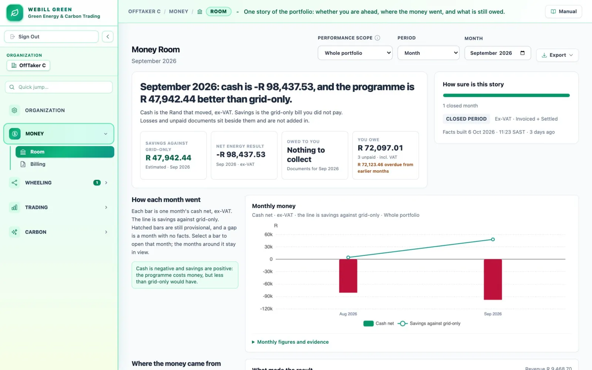
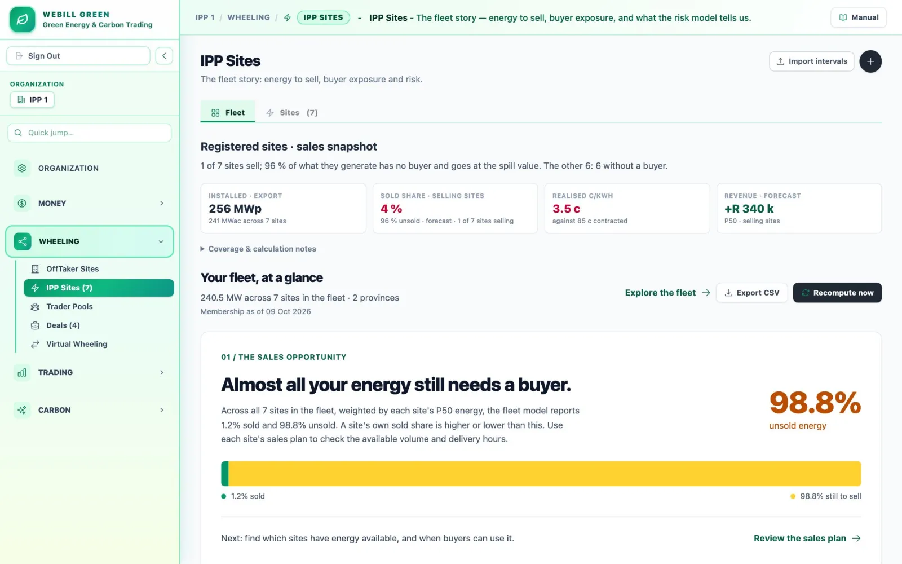
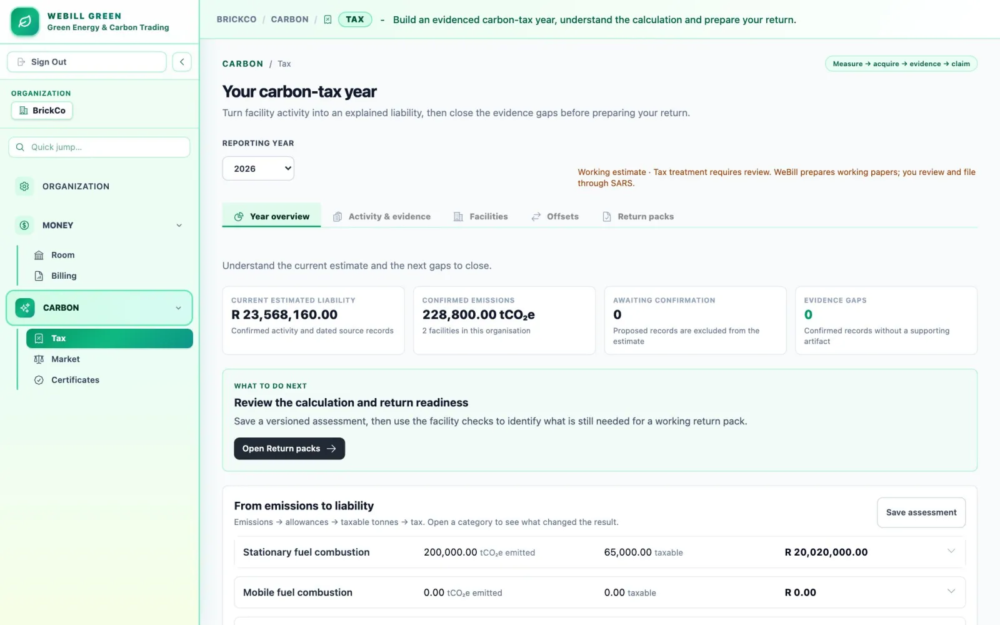

SAWEM is scheduled to open in April 2027. Until then, market lines run on the simulator.
Webill Green is one of very few platforms built to run South Africa's electricity trade end to end. It meters, routes, settles and bills for independent power producers, off-takers and traders, and prepares the carbon-tax return for companies that emit, all on one record every party can check.
Matched to the buyerSurplus, sold day-aheadBought from the gridBuyer's demandForecast, not yet metered
Off-peakStandardPeakEskom TOU periods for today
Select an hour
The energy
The ledger for this hour
Party
Line
Amount
Illustrative contract: a hybrid solar-and-wind farm sells to a factory at 85.0 c/kWh, wheeled over Eskom's network and a municipal network. Today's generation and demand are modelled, not metered. Prices, losses and the grid comparison follow the platform's worked examples.
Others handle a slice. Webill Green carries the whole trade.
A traded kilowatt-hour needs ten jobs done, in order, for every party, every month. Webill Green is one of very few platforms built to do all ten, and the only one we know of that does them on a single ledger.
Wheeling and matching software
Virtual Wheeling data platforms
The Market Operator's exchange
Billing systems
Certificate registries
ContractPPAs, proposals, signatures
Meter20-minute intervalsAlso covered by wheeling and matching software
AllocatePublished rules, every intervalAlso covered by wheeling and matching software
WheelEskom and municipal, each onceAlso covered by wheeling and matching software
RefundEskom Virtual WheelingAlso covered by Virtual Wheeling data platforms
TradeDay-ahead, intraday, imbalanceThe Market Operator runs the exchange; Webill Green is your side of it
SettleA ledger that sums to zero
BillStatements, invoices, credit notesAlso covered by billing systems
CertifyCertificates and the carbon venueRegistries issue; Webill Green mirrors and trades
ReportThe carbon-tax return packPlanned release
Webill Green: all ten jobs, on one ledger
Each kind of tool covers part of the chain, and spreadsheets carry the trade between them. Webill Green carries it the whole way. The exchange itself belongs to the Market Operator, and the carbon-tax pack, drawn dashed, is prototyped and tested but not yet released.
One ledger for the whole book.
Bilateral PPAs, Eskom Virtual Wheeling, wholesale trades and carbon settle in one engine. The month closes once, and every party sees the same figures.
Routes run across Eskom's network and the municipalities', with each network's losses and charges applied exactly once, and every charge paired on the ledger.
The participant side of SAWEM is built to Market Code revision 2.3: day-ahead and intraday bids, credit cover, imbalance and settlement statements, rehearsed every day on a 50-participant simulator. The live link waits only on the Market Operator's interface.
Webill Green is not a generator, a trader or a wires owner. A trader's platform serves its own book; Webill Green settles for the IPP, the trader and the buyer on the same terms.
Tariffs, loss factors, network charges and draft trading rules live as effective-dated data, not code. When NERSA finalises a rule, a row changes, and every past period still settles on the rules of its own dates.
NERSA's draft framework keeps automated trading off SAWEM for its first five years. Webill Green already works that way: engines compute, people approve with four eyes on every limit, and every pack rebuilds byte for byte from its evidence.
For most of its history, South African electricity had one seller. Since the licensing cap on private generation was removed at the turn of 2023, private generators, licensed traders and large buyers have been contracting with one another directly, and every one of those deals has to be metered, settled, invoiced and proved.
Today that work lives in spreadsheets, hand-built back offices and a separate vendor portal for each counterparty. Webill Green replaces them with one engine for the whole book: bilateral PPAs, Eskom Virtual Wheeling, wholesale trading and carbon, on one ledger.
Private generation registered with NERSA, MW per year
20.1 GWregistered by June 2026, 2,619 facilities
25
23
53
135
1,664
4,490
4,441
7,464
20182019202020212022202320242025
2022 to 2023
The licensing cap on private generation is removed.
1 Jan 2025
The Electricity Regulation Amendment Act comes into force.
3 Mar 2025
NERSA approves the wheeling rules.
Jan 2026
Phase two of the carbon tax begins.
Feb 2026
Market Code revision 2.3 is published.
Apr 2027
SAWEM, the wholesale market, is scheduled to open.
One engine for the whole book. PPAs, Virtual Wheeling, market trades and carbon settle on one ledger.
A vendor portal for each network and counterparty.
Routes across both networks, Eskom's and the municipalities', with each network charging once.
Month-end reconciliations that never quite agree.
One deterministic period close and one invoice per counterparty.
Refunds checked by hand, meter by meter.
Virtual Wheeling refunds matched every 15 minutes and reconciled against Eskom's credit note.
A carbon-tax return assembled from inboxes each July.
A return pack that rebuilds identically from its evidence, ready for the company to review and file.
Follow one kilowatt-hour.
Every screen in Webill Green is a stop on the same road. A reading enters at the meter and leaves as a line on a statement that both parties can sign.
1 of 7
Setup: stand up the facts.
Your organisation, its sites and meters, the tariffs in reach and the feeds that bring readings in. From the moment a meter is assigned, its readings become 20-minute intervals that everything downstream uses.
Where you work: Organization, Off-taker Sites, IPP Sites
Interval
20 minutes
Intervals today
72
Read so far
--
00:0006:0012:0018:0024:00
2 of 7
Deal: agree the terms once.
Find a counterparty, send a proposal, negotiate the terms and sign. On its start date the contract goes active and becomes a standing instruction to the settlement engine.
Where you work: Deals, with its Proposals, Negotiations, Contracts and Disputes
A physical PPA on its way to active
Draft
Pending
Accepted
Negotiating
Agreed
Signed
Active
PPPA-202607-138209764
Physical and virtual PPAs between IPPs, traders and off-takers: eight deal types, one engine. An agreed deal left unsigned for 10 days is suspended.
3 of 7
Strategy: know where the energy will go.
Each book forecasts and allocates its portfolio every night: where energy will flow, what margin it earns and what is at risk. Simulate a deal before you sign it. A simulation is a rehearsal; it does not sign a contract.
Where you work: IPP Sites, Trader Pools, the Sales and Procurement Desks
Allocation runs in a published order
PriorityPro rataFixedSurplus
Priority buyers are served first, in full.
Pro rata buyers share what is left in proportion.
Fixed is a cap, not a delivery guarantee.
Surplus is energy still to sell.
4 of 7
Nominate: commit next month, hour by hour.
Flexible members declare next month's volumes. A submitted nomination is binding: settlement reads it where no meter can speak, such as a trader's book, and imbalance is judged against it.
Where you work: Trader Pools and the nominations desk. Proposals for next month arrive on the 20th.
One day of a nomination, MWh per trading period
00:0006:0012:0018:0024:00
5 of 7
Market day: bid before the gate, answer for it after.
Your BRP seat bids the book's net position into the day-ahead auction before 10:00 SAST the day before, corrects undelivered hours in five intraday auctions, follows the System Operator's instructions and accrues imbalance where actuals drift from schedule.
Where you work: Market, Bid Desk, MonthSimulated until SAWEM opens
The SAWEM clock, in SAST
Day-ahead gate closes for seven days ahead
Prices and schedules published
Five intraday auctions for undelivered hours
Indicative settlement statement
6 of 7
Settle: match, price, adjust, balance.
When a period closes, the engine resolves what each meter or nomination says, matches supply to demand, applies losses and network charges and prices the contract's terms. It adjusts for spill, shortfall, curtailment and banking, then writes a ledger whose lines sum to zero.
Where you work: Deals, Contracts, and each site's Commercial tab
1ResolveWhat each meter or nomination says
2MatchThe lesser of supply and demand, less losses
3PriceThe contract's terms, split by TOU
4AdjustSpill, shortfall, curtailment, banking
5LedgerEvery line has a partner. Σ = 0
7 of 7
Statement: who owes whom, provably.
Each party receives an immutable, versioned statement: the same ledger, filtered to what it owes and is owed. A FINAL statement is never edited. A correction is a new version, and a dispute reopens a period deliberately, never silently.
Where you work: Billing and the Money Room
Energy, peakR 7,457.33
Energy, standardR 16,406.13
Energy, off-peakR 7,244.27
Owed to the sellerR 31,107.73
FINALVersion 1, content-hashed
Two networks. Each charges once.
Wheeled power crosses Eskom's network and often a municipality's. Webill Green applies each network's losses and charges exactly once, and proves the day with a ledger that sums to zero.
Wind farm, Atlantis
Sells at 85.0 c/kWh 554,104 kWh generated
Data centre, Midrand
Buys on delivered energy 38,933 kWh used
Settlement statement
Thursday 9 July 2026, settled daily. Contract PPPA-202607-138209764
FINAL
Price
85.0 c/kWh fixed
Losses
6%
Shape
As generated
Spill, not billed here
515,170.901 kWh
Energy, split by TOU
Period
Matched kWh
Delivered kWh
At 85.0 c
Peak
9,333.333
8,773.333
R 7,457.33
Standard
20,533.333
19,301.333
R 16,406.13
Off-peak
9,066.667
8,522.667
R 7,244.27
Total
38,933.333
36,597.333
R 31,107.73
Ledger: every rand has a partner
Party
Line
Amount
Wind farm
Energy, three TOU lines
+R 31,107.73
Data centre
Energy
−R 31,107.73
Municipal network
Wheeling at 11 c
+R 4,025.71
Data centre
Wheeling
−R 4,025.71
Eskom Transmission
Transmission at 18 c
+R 6,587.52
Data centre
Transmission
−R 6,587.52
Eskom Transmission
Ancillary at 2 c
+R 731.95
Data centre
Ancillary
−R 731.95
Municipal network
Distribution at 13 c
+R 4,757.65
Data centre
Distribution
−R 4,757.65
Σ
Ten lines, five pairs
R 0.00 ✓
A room for every desk.
The Organization app groups its rooms by the work. One organisation can be an IPP, a trader and an off-taker at once, and sees only the rooms its roles need.
Money RoomProfit and loss across fourteen value streams. Every figure is graded settled, invoiced or estimated, and traces back to its documents.
BillingInvoices, credit notes, statements, payments and aging. VAT at 15% is rounded once, and a correction is always a note, never an edit.

Money Room.
Off-taker SitesSites, meters, readings and what each site's electricity really costs.
IPP SitesThe fleet story: energy still to sell, buyer exposure and risk.
Trader PoolsA licensed trader's books, which own no meter.
DealsProposals, negotiations, contracts and disputes.
Virtual WheelingEskom's monthly refund, matched every 15 minutes across your meters.

IPP Sites, Fleet.
MarketYour membership desk: account, credit cover, notices, registry, standing data and API access.
Bid DeskDay-ahead and intraday bids for the books your BRP balances, on a live market clock.
MonthAfter delivery: metering, imbalance and the settlement month.
AccountsMarket accounts, statements and invoices from the Market Operator.
Bid Desk.
TaxAn evidenced carbon-tax year, from facility activity to the July return pack.
MarketBilateral trades and a venue for certificates and carbon credits.
CertificatesRenewable certificates accrued from FINAL settlement and mirrored from the registry.

Carbon Tax. The tax pack is not yet commercially released.
Built for the people who close the month.
Finance, trading and settlement teams at IPPs, traders and large off-takers set the bar. Pick your seat.
Sell the gap.
Your output never matches your contracts. Each interval has to be allocated to the right PPA, curtailment claimed, surplus sold and shortfall covered, and the month closed once, with one invoice per counterparty.
A fleet view of the energy still to sell, and what it is worth
Allocation rules that run in a published order: priority, pro rata, fixed, surplus
Curtailment claims backed by plant evidence
One deterministic close and one invoice per counterparty
Where you work: IPP Sites, Deals, Bid Desk, Billing
You need to know whether you are paying less, and greener, than buying everything from the grid, and what to do next. Wheeled credits arrive per TOU period, Virtual Wheeling refunds 45 days after the month, and the municipal bill still has to be checked against interval data.
Landed cost per kWh, with the arithmetic shown
A Procurement Desk that compares every option with staying on the grid
Virtual Wheeling refunds reconciled meter by meter, every 15 minutes
A dual-method Scope 2 emissions statement
Where you work: Off-taker Sites, Virtual Wheeling, Money Room
You own no meter and carry both sides of a book. A trade's price matters, but so do its hours: cheap midday solar is a poor answer to an evening shortage.
Trader pools that buy from generators and sell to consumers
The Desk: sell the long, buy the short, hour by hour
Chain reconciliation from IPP, through the trader, to the off-taker
Risk limits, the kill switch and the automation level behind four-eyes approval
As the Balance Responsible Party you balance the books against the market. Bids go in before the 10:00 gate, intraday corrections follow, and every hour's deviation becomes imbalance you must explain.
Day-ahead and intraday bids built from the book's net position
Credit cover checked before a submission leaves
The after-delivery month: metering, imbalance and settlement
A market clock that shows every gate in SAST
Where you work: Market, Bid Desk, MonthSimulated until SAWEM opens
Carbon-tax evidence sits in inboxes and spreadsheets, and the deadline arrives every July. Mistakes happen because the evidence was scattered, not because the arithmetic is hard.
Facility activity turned into an explained liability
Offsets checked against their caps before they count
A return pack with working papers, annexures and a hashed audit index
Certificates accrued from settled energy, mirrored from the registry
Where you work: Tax, Certificates, Carbon MarketTax pack: planned
South Africa's carbon tax rises every year and is filed each July on SARS eFiling. Webill Green turns a year of facility activity into an explained liability, checks offsets against their caps and builds the return pack with its evidence.
The company reviews, signs and files. Webill Green never holds SARS credentials and never gives tax advice.
Planned: prototyped and tested, not yet commercially released
Rates are legislated to 2030; the years ahead are drawn dashed.
EmissionstCO₂e by source
×
(1 − allowances)basic, offsets, others
×
R 308per tonne in 2026
Honest about what is live.
The wholesale market opens in phases, and much of the platform is shown on a simulated world today. Here is exactly what that means.
Built
In the product today
Shipped, tested and documented.
Contracts from proposal to signature, physical and virtual
Settlement to a zero-sum ledger, DRAFT to FINAL
Invoices, credit notes, VAT and month packs
Virtual Wheeling allocation and refund reconciliation
The Money Room profit and loss
Day-ahead and intraday bidding from the BRP seat
Certificate custody and the carbon venue
Simulated
A rehearsal, clearly labelled
Synthetic, and never shown as real traffic.
The Market Operator and System Operator consoles
A market of 50 synthetic participants: 15 IPPs, 15 off-takers, 20 traders
Carbon registry connectors for Verra, Gold Standard and COAS
Weather inputs to the generation forecast
Waiting
On an outside trigger
Ready on our side; waiting on someone else's.
Live SAWEM connection: waits on the Market Operator's interface, endpoint and security document
SAWEM's opening, scheduled for April 2027
Registry writes, until registries publish write APIs
Commercial release of the carbon-tax pack
A person confirms
Done by a person, on purpose
Engines compute; people confirm.
Moving a statement from PRELIMINARY to FINAL
Changing risk limits, the kill switch or the automation level, with four eyes
Marking a carbon-tax return ready: a check, not a button
Filing the return on SARS eFiling
Neutral, by construction.
Webill Green takes no side in the trade. It routes, meters, settles and proves for every party, and no network is charged twice. Some things it will never do.
Generate power or own wires
Change how the wholesale market clears
Hold SARS credentials or file your return
Give tax advice
Hold client money in version 1
Offer carbon derivatives
Score ESG
The engine, by its rating plate.
The constants every screen respects.
Webill Green
The traded electricity platform. Locale: South Africa
Follows Market Code v2.3. Compliance is self-assessed
Metering grain
20-minute intervals; 15 for Virtual Wheeling
Trading day
24 hourly periods, SAST, no daylight saving
Day-ahead gate
10:00 SAST, the day before delivery
Settlement
DRAFT, then PRELIMINARY, then FINAL
Ledger
Every period sums to R 0.00
Rates
Effective-dated; FINAL is superseded, never edited
Evidence
Hashed packs that rebuild identically
Controls
Four eyes on limits, kill switch and automation
Money
Rand, with VAT at 15% rounded once
Engine
24 domains, more than 8,000 automated tests
Deal types
Eight, physical and virtual, on one engine
Rehearsal market
50 synthetic participants
See it run on the demo world.
A walkthrough runs on Webill Green's deterministic demo world: a simulated market of fifty participants, a live 20-minute meter simulator and the screens your team would use. Tell us what you'd like to see and we'll start there.